L5R · FORTRESS HALL · MILESTONE 07
Worn timber, stone and shoji
Three Meshy wood finishes, two stone variants, refinished chests and crafted steps. Closed side screens give the room its boundary; tabletop lamps and spear racks are removed.
Play Latest · Validation record · Draft PR #234
The room · before / after
Previous native M6Current native M7
Approved reference and native comparison
 Approved atmospheric target. Latest request removes its tabletop lamps and spear racks, and closes the sides.Actual Godot room. The wider comparison camera is separate from the playable board below.
Approved atmospheric target. Latest request removes its tabletop lamps and spear racks, and closes the sides.Actual Godot room. The wider comparison camera is separate from the playable board below.The materials up close
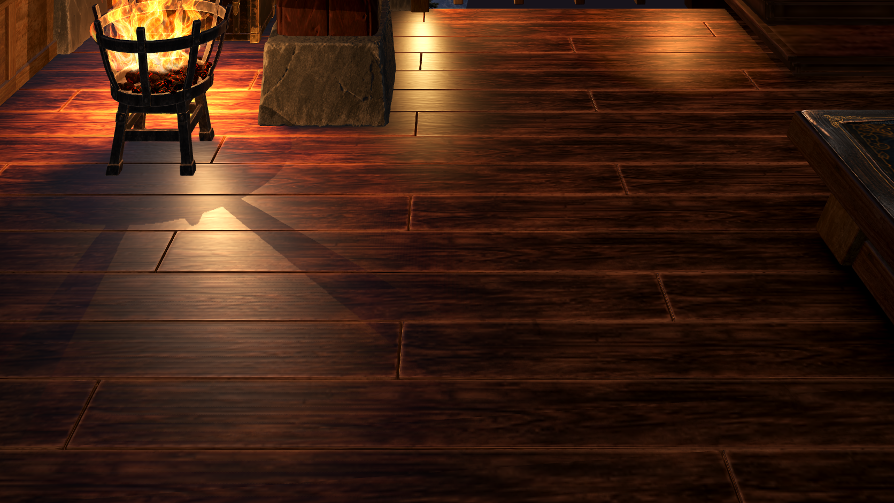
Three related finishes, subtle wear variation and softer firelight highlights.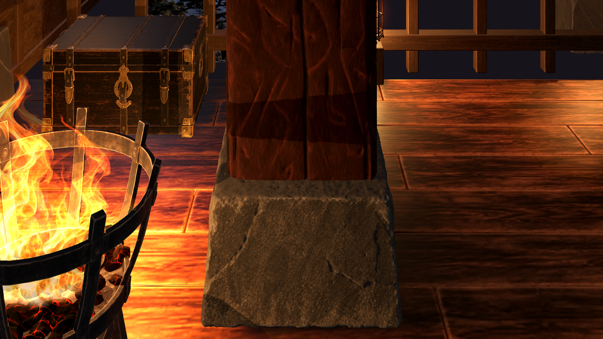
Separate matte mineral footings with chipped edges; original timber retained.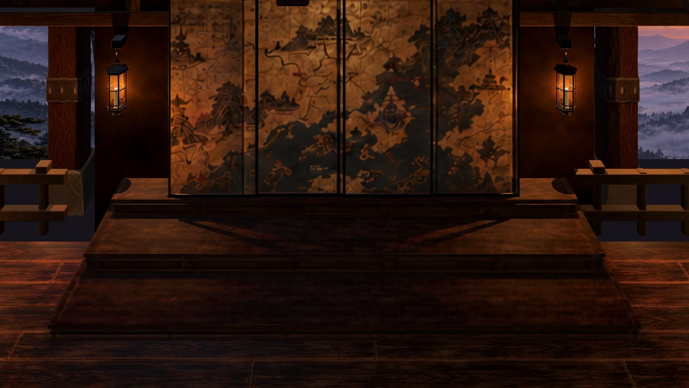
Fitted low steps with eased treads and framed risers.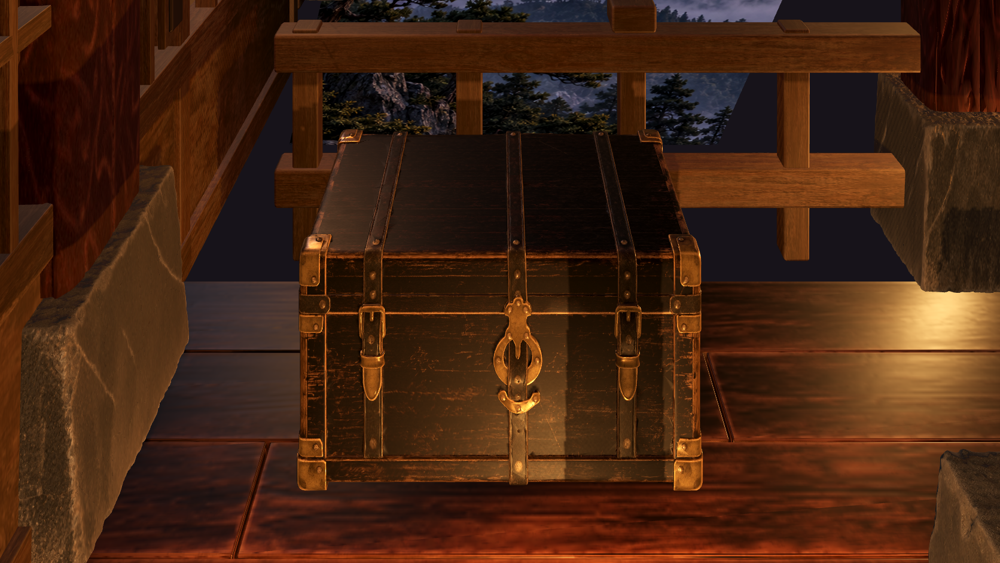
Weathered lacquer, worn hardware and clear column/wall spacing.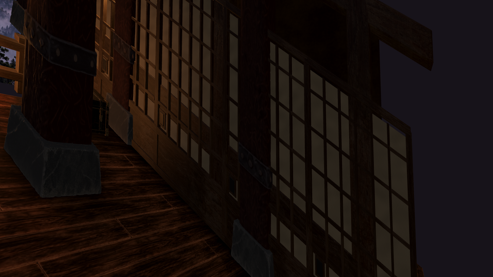
Closed side shoji with lattice, lower timber panels and recessed pulls.Meshy variants · Blender inspection
These neutral studio renders show the separate asset variants before room lighting. Original 4K results are retained locally; prepared game maps are capped at 2K.
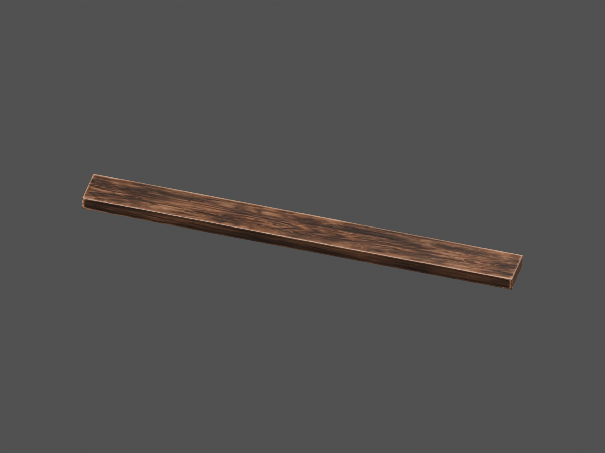
Floor A · cleaned Blender asset.Floor B · cleaned Blender asset.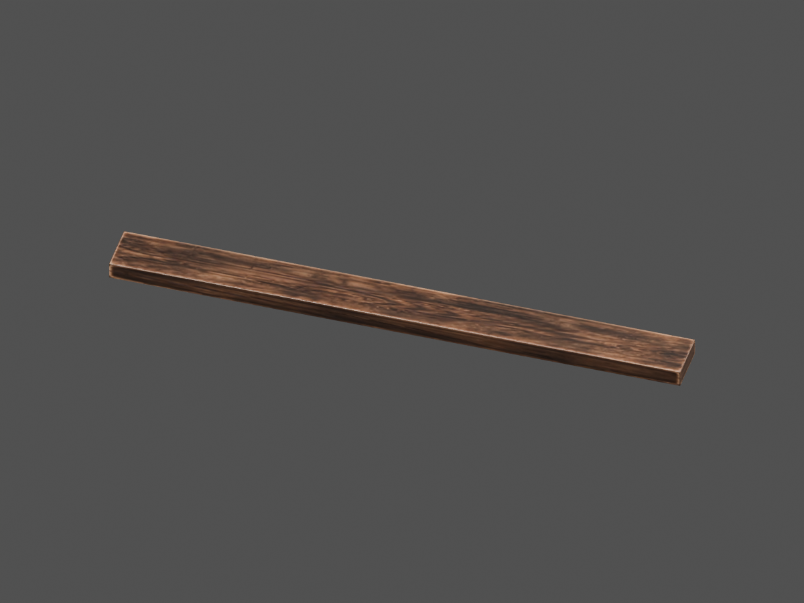
Floor C · cleaned Blender asset.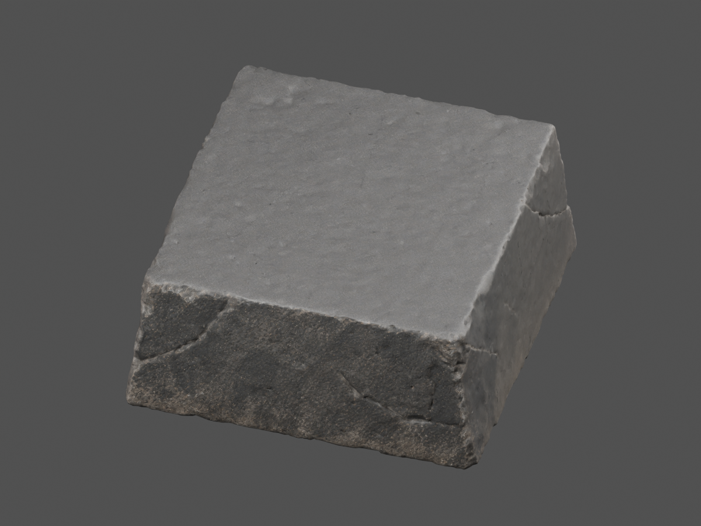
Stone A · cleaned Blender asset.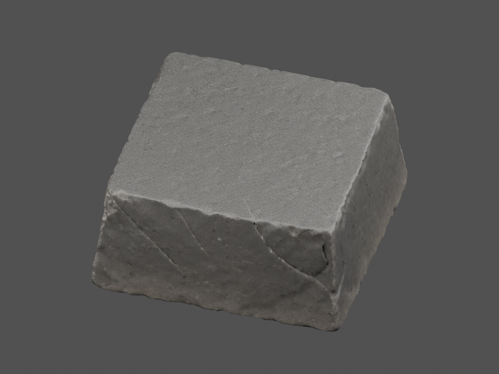
Stone B · cleaned Blender asset.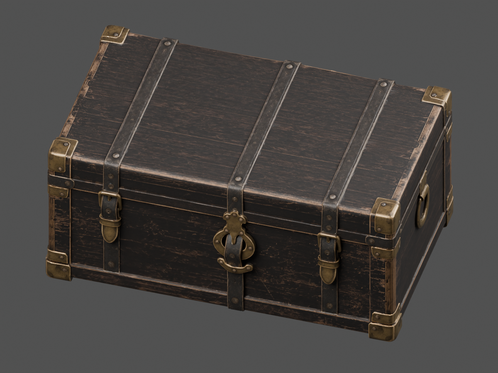
Chest · cleaned Blender asset.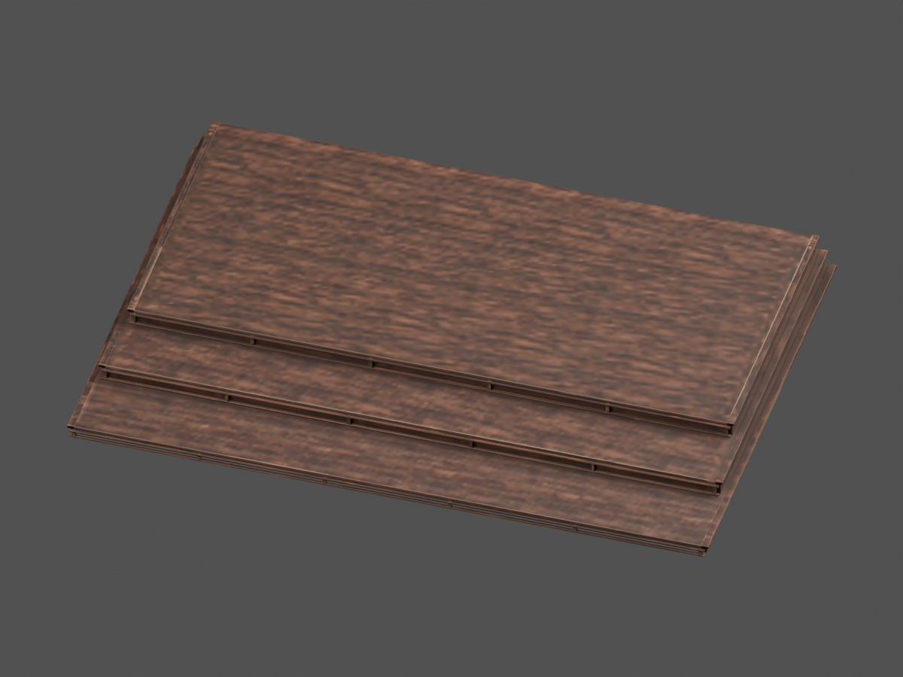
Dais Fit · cleaned Blender asset.Room light in motion
Native firelight; the removed table lamps contribute no lingering glow.Room lantern retained. Reduced motion freezes and resumes the shared presentation clock.
The actual game
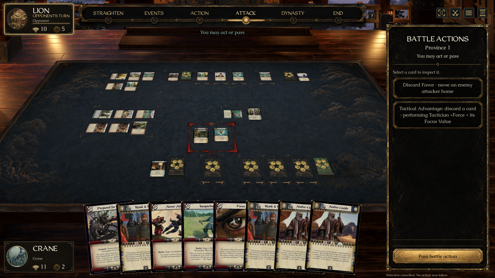
Existing card layout and input camera preserved.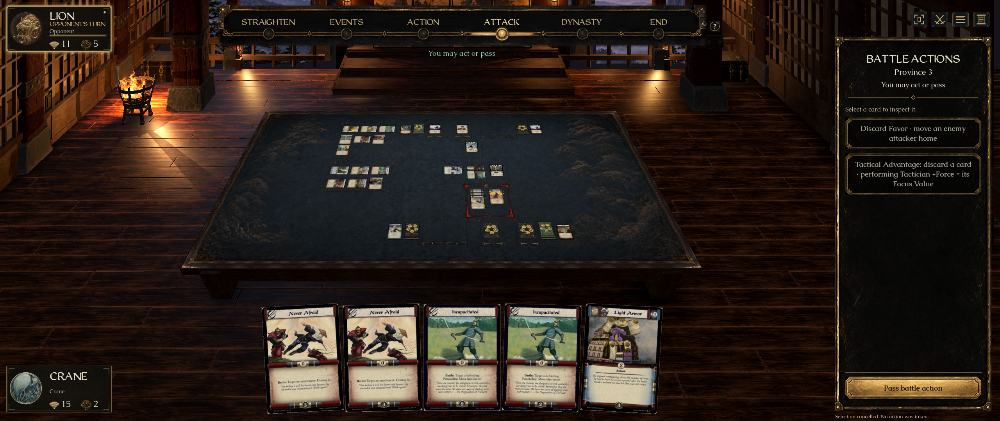
Wide window and edge selection.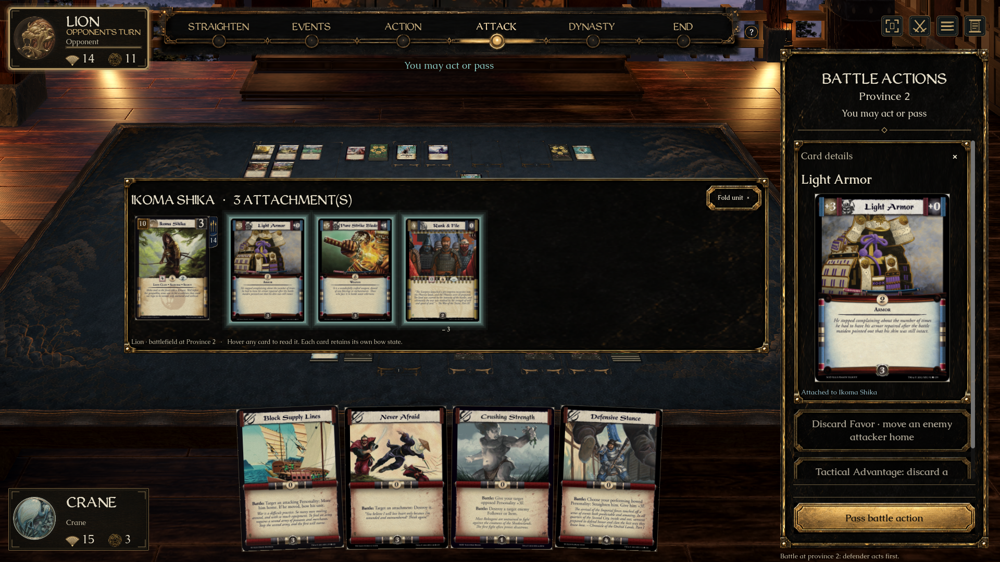
Expanded unit in battle.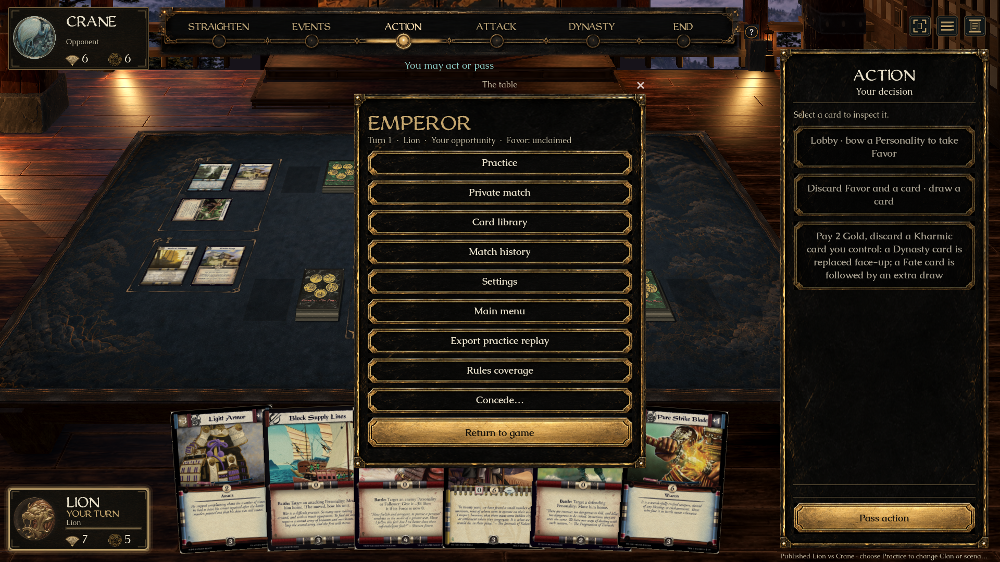
Worn black lacquer menu.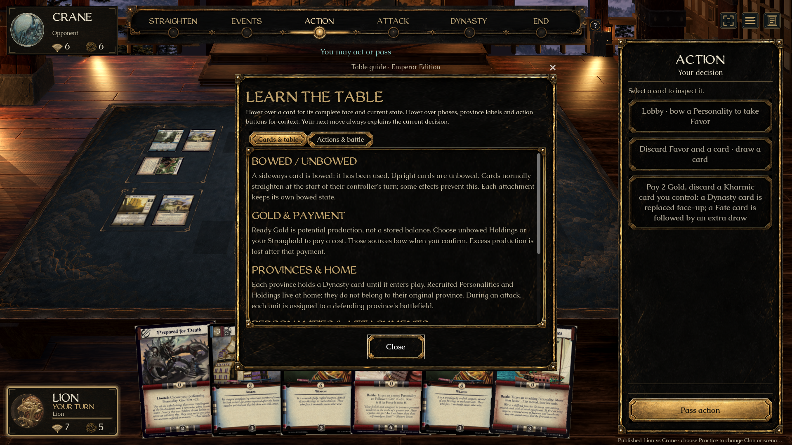
Table guide.Visual review milestone, not a claim of a pixel-identical reconstruction. The normal game preserves its established card scale. The architecture is prepared for that fixed-pitch camera, not arbitrary orbit. The rear vista remains a matte; fire is layered artwork and the floor uses a Cycles light/contact bake with native local modulation. Motion clips are captured frame sequences, not a real-time FPS benchmark. Windows graphical testing and sustained performance profiling remain open.